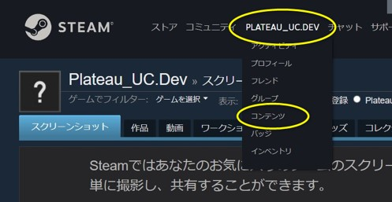
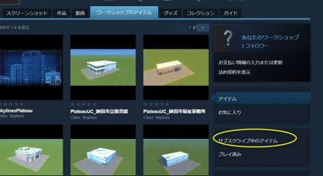
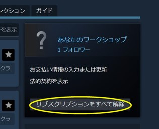

2. SkylinesPLATEAUの導入
2.1 SkylinesPLATEAU及び、必須MOD・アセットの導入
SkylinesPLATEAU及び必須MOD・アセットを導入するため、Steamのサイトからサブスクライブしてください。
Cities: SkylinesではMODによるUIの日本語化と高速道路（対向2車線）のアセットが必要となります。
① SkylinesPLATEAU_必須MOD、アセットをブラウザで開きます。
② 「+全てをサブスクライブ」ボタンをクリックします。

必須MOD・アセットの内容
| コレクション上の表示名 | 内容 |
|---|---|
| SkylinesPLATEAU | 3D都市モデルをインポートするためのMOD |
| Japanese Localization Mod （日本語化MOD） |
UIを日本語化するためのMOD |
| NExt2 Based National Road | 高速道路（対向2車線）のアセット |
（参考）サブスクリプションの解除
既にサブスクライブしているMOD同士の干渉回避が必要な場合やコレクション「SkylinesPLATEAU_必須MOD、アセット」を更新する必要がある場合には、サブスクリプションをすべて解除した後、必要なMOD、アセットのサブスクライブを行ってください。
① Steamサイト又はSteamアプリ上部のユーザー名をクリックし、その後表示される「コンテンツ」をクリックします。
② 「ワークショップのアイテム」タブから右下の「サブスクライブ中のアイテム」をクリックします。
③ 「サブスクリプションをすべて解除」をクリックします。
